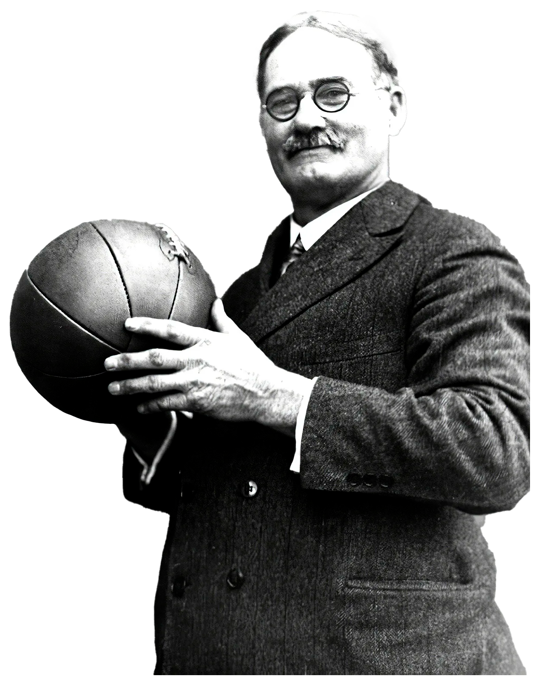

--História do Basquete--

Na época (1891), ele trabalhava na Associação Cristã de Moços de Springfield, Massachusetts, nos Estados Unidos.
O esporte surgiu como uma alternativa ao inverno rigoroso da região, em detrimento dos outros praticados ao ar livre como o basebol e o futebol.
Além disso, a ideia original era criar um esporte menos violento que o futebol
americano. Aliado a isso, o professor criador pretendia integrar os alunos nas aulas de
educação física e estimular a coletividade dos grupos.
O primeiro jogo oficial de basquete foi disputado em 1892, e teve uma plateia
aproximada de 200 pessoas. Nesse mesmo ano, as mulheres começaram a praticar essa modalidade.
Já a primeira partida feminina ocorreu em 1896.
A modalidade feminina foi inserida pela professora de educação física Senda Berenson (1868-1954).
Foi também em 1896 que o esporte chegou ao Brasil, trazido pelo norte-americano Augusto Louis.
Somente mais tarde que o basquetebol passou a figurar nas Olimpíadas.
O primeiro jogo de basquete olímpico aconteceu nos Jogos Olímpicos de Verão de 1936, em Berlim.
Esse momento representou uma grande conquista para a disseminação do esporte pelo mundo.
Hoje, cerca de 200 países são filiados à FIBA, Federação Internacional de Basquetebol.
Essa organização foi fundada em 1932 e é responsável por organizar os eventos relacionados com o basquete em nível mundial.
Atualmente, sua sede está localizada em Genebra, na Suíça.
--Basquete no Brasil--
O basquete chegou no Brasil ainda no século XIX, pelas mãos de Augusto Shaw,
um norte-americano que veio ao país dar aulas no Colégio Mackenzie, em São Paulo.
A disseminação do esporte pelo Brasil também teve a participação da mesma entidade em que surgiu
o basquete nos Estados Unidos, a ACM. Em 1912 foram realizados os primeiros torneios,
e em 1916 a Liga Metropolitana dos Sports Athléticos reconheceu o basquete enquanto esporte,
criando o primeiro campeonato oficial em 1919. Deste campeonato, saiu vencedora a equipe do Flamengo.
Entre os principais nomes do basquete no Brasil, temos Oscar Schmidt,
Hortência, Paula e Janete. Todos atletas olímpicos e de destaque nas ligas nacionais.

James Naismith, o fundador do basquetebol
História do Basquete | Nerdologia
História do Basquetebol Completa no Brasil e no Mundo